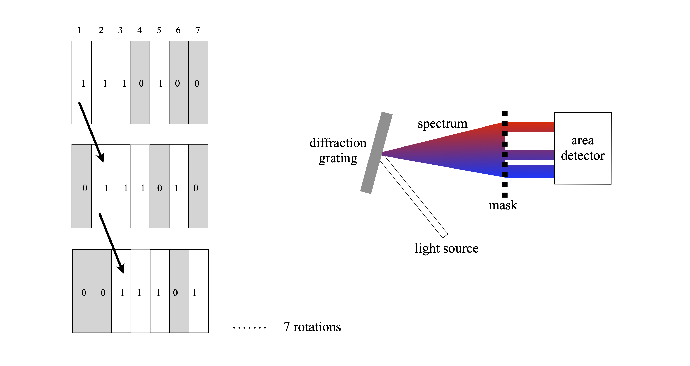
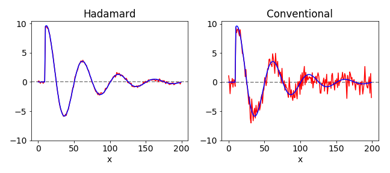
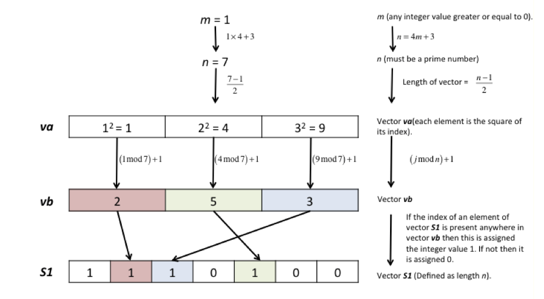

The Hadamard Transform: Encoding and Decoding¶
# import all python add-ons etc that will be needed later on
%matplotlib inline
import numpy as np
import matplotlib.pyplot as plt
from sympy import *
from scipy.integrate import quad
init_printing() # allows printing of SymPy results in typeset maths format
plt.rcParams.update({'font.size': 14}) # set font size for plots
Motivation and concept¶
To obtain the average value of a quantity, such as weight, individual measurements are usually made, then added together and divided by the number of measurements made. However, this is not the only way of obtaining the average. You may be familiar with the method of weighing several objects at a time and perhaps know also that doing this will reduce the error in the average value. This multiple weighing method is an example of using a Hadamard transform and anything that can be measured in groups can be treated in the same way, for example, a spectrum or an image, thus the method is quite general. The reason that this multiple measuring method works is that the error is introduced by the balance not by the objects being weighed. A large weight therefore has the same error associated with its measurement as a smaller one does.
The reason for doing any transform experiment is always the same and either this is to achieve an improvement in signal to noise, or, a reduction in the time taken to do an experiment at a fixed signal to noise, which is effectively the same thing. Normally for \(n\) measurements, the signal to noise increases only as \(\sqrt{n}\) but in the Hadamard approach, the signal to noise achievable increases at least as \(n/2\), which is a huge improvement if, for example, \(n= 100\).
11.1 The Hadamard Transform¶
The Hadamard transform is a purely discrete transform and instead of forward and back transforming, as in the Fourier transform, the equivalent steps are encoding and decoding. The encoding is done by adding several measurements together according to a set of rules or algorithm. The rule is always written down as a matrix, two forms of which \(\boldsymbol H\) and \(\boldsymbol S\) can be used; in the first \(\boldsymbol H\) is a matrix of ones and minus ones, the other \(\boldsymbol S\), is a matrix of zeros and ones. We shall concentrate of the \(\boldsymbol S\) matrix form; it is the most useful one to use experimentally because it involves making only one measurement at a time; the \(\boldsymbol H\) matrix method involves making two measurements. Harwit & Sloane (1979) describe the Hadamard transform method in detail, but see Marshall (1978) for a brief description.
11.2 Encoding and decoding with \(\boldsymbol S\) matrices¶
Suppose that there are three samples to be weighed of masses \(x_{1,2,3}\) they could be grouped as \(x_1 + x_2,\; x_1 + x_3\) and \(x_2 + x_3\) and weighed two at a time on a single pan balance. Written as equations where the \(z\)’s are the measured values then
These equations can be solved simultaneously to find the weights ( \(x\)’s ), for example, \(2x_1 = z_1 + z_2 - z_3\) and so forth. Instead of doing this, which would be hard if there were \(100\) equations, the coefficients in equation (47) can be put into a matrix called an \(\boldsymbol S\) matrix, (also called a Simplex matrix) and for this example this is
Note how the pattern is the same as that of the coefficients in the equations and that it cycles around so that each column is related to the next by one position of cyclic rotation. As a matrix equation, equation (47) is
and to solve for (column) vector \(\boldsymbol x\), (column) vector \(\boldsymbol z\) is multiplied by the inverse of matrix \(\boldsymbol S\) and the result is
To show that this works, suppose that the \(\boldsymbol x\) values are \(12, 5\), and \(2\), then the individual \(\boldsymbol z\) values are \(x_1 +x_2 =17\), \(z_2 =14\) ,and \(z_3 =7\) and the calculation \(\boldsymbol S^{-1}\boldsymbol z\) is
Of course if there are more than three values then a different \(\boldsymbol S\) matrix will have to be be used. The rules are that each column must be orthogonal to every other one and that each column must be related to the next by cyclic rotation, and thus they contain the same number of zeros and ones. The rules for producing the \(\boldsymbol S\) matrix are described in Section 11.6. As a check the matrix inverse \(\boldsymbol S^{-1}\) is calculated using SymPy.
# check on matrix inverse
S = symbols('S')
S = Matrix([[1, 1, 0], [1, 0, 1], [0, 1,1]])
S**(-1)
11.3 Signal to Noise improvement¶
To see why this method works to improve signal to noise some error has to be added to each measurement. If each measurement has a standard deviation determined by the instrument (scales) used then a measurement of \(x\) if done individually also has this error. When weighed in pairs, each pair of \(x\)’s has the same standard deviation \(\sigma\) because this is a property of the scales not the weights. The mean square error between the true and estimated values \(\psi\) is
which is used to estimate the overall error. If \(\boldsymbol z\) is the vector of the estimated values, the calculation for weighing in groups is \(\psi =\boldsymbol S^{-1}\boldsymbol z\)
z,m1,m2,m3,sigma = symbols('z m1 m2 m3 sigma')
z = Matrix([m1 + m2 + sigma, m1 + m3 + sigma,m2 + m3 + sigma]) # define matrix
psi = S**(-1)*z
psi
subtracting each \(m_i\) from each \(\psi_i\) and summing produces \(mse = 3\sigma^2/4\). The mean square error of any single measurement is \(\sigma^2\) so that an improvement is obtained by measuring in groups, although it is small in this case. If \(n\) measurements are made then mean square error is reduced by \(\displaystyle (n + 1)^2/4n\) and the signal to noise improved by \(\displaystyle (n+1)/\sqrt{4n} \approx\sqrt{n}/2\).
11.4 Implementation¶
Instead of weights, suppose that a spectrum is to be measured. To do the experiment, the detector is placed at the focusing plane of a spectrometer, the exit slits of which are removed and then a mask consisting of strips of opaque (0) and transparent (1) regions is placed there instead, see Fig. 49. At the first position the total amount of light falling on the detector is measured, this is \(z_1\) and corresponds to measuring at positions \(1 + 2 + 3 + 5\). Next, the mask is moved by one position, \(z_2\) is measured which corresponds to light transmitted by \(2 + 3 + 4 + 6\), and so on until all measurements are taken, \(7\) in this example. Each measurement corresponds to moving from one column to the next in the \(\boldsymbol S\) matrix and the total light measured forms the \(\boldsymbol z\) matrix. Once this encoded \(\boldsymbol z\) matrix is established it is multiplied by \(\boldsymbol S^{-1}\) and the signal \(\boldsymbol x\) recovered. Experiments have been performed by physically moving a mask etched in glass but a programmable liquid crystal mask would be easier to use. If there are \(n\) elements in the mask, then \(n\) different wavelengths are measured at the end of the \(n\) experiments. The resolution is determined by the width of the mask compared to the wavelength spread it covers.

Figure 49. The pattern of the mask replaces the slits of the spectrometer. The detector measures all the light transmitted by the mask at each position. Each mask is rotated by one element from the previous one. All the mask elements when placed together form the \(\boldsymbol S\) matrix. A possible experimental set up is shown on the right.
In Fig. 50 is shown a simulated comparison of data taken in the normal way and with that taken using the Hadamard encoding method. The noise on the detector is normally distributed with a mean of \(0\) and \(\sigma = 1\). The improvement in signal to noise is clear. In the calculation normally distributed noise with a standard deviation of \(0.5\) was added to a damped exponential. The data shown is the result of an \(n = 199\) Hadamard experiment. The expected improvement in signal to noise is the ratio of the mean square error of the two sets of data. The expected value for the increase in signal to noise ratio is \((n + 1)^2/\sqrt{4n} \approx 7\) for the \(199\) data points used and the measured value for this particular calculation is 7.3. When there is additionally noise imposed on the data before it reaches the detector the Hadamard method only reduces the noise due to the detector.
The Hadamard technique has recently been applied by the author to time resolved x-ray crystallography (Nat. Methods. 2014 Nov; 11(11): 1131-1134. )and has also been applied to time-resolved spectroscopic measurements (Appl. Spectros. 2016,70,1292-1299). To perform a time-resolved absorption measurement, a train of pulses whose intensity is in the \(0\) and \(1\) pattern of one column of the \(\boldsymbol S\) matrix is passed through the sample each time the reaction is started. Starting the reaction can be achieved by mixing reactants in a stopped flow reactor or by a flash of light in a flash photolysis or pump probe experiment. The total light transmitted by the sample is recorded after each pulse train has finished. The first train of pulses produces point \(z_1\) as described above. The experiment is repeated by exciting the sample again, rotating the sequence of pulses by one element and the total light transmitted is recorded again, producing point \(z_2\), and this is repeated for n experiments. The \(\boldsymbol z\) data, a column matrix of \(n\) elements, is the Hadamard encoded data and is decoded as in equation (48) to produce the \(\boldsymbol x\) column matrix, which is the intensity transmitted by the sample at each time point.
The timescale of the measurement is set by the spacing between any two pulses in the sequence and the total measurement time is \(n\) times this. The train of pulses can conveniently be produced by an electro or acousto - optic modulator, either by extracting pulses from a train of mode-locked laser pulses or from a continuous laser or other light source. If pulses could be produced close enough together in time, this method would remove the need for delay lines in picosecond and femtosecond pump-probe experiments.

Figure 50. Comparison of Hadamard and normal (conventional) on the same set of data. The initial ideal data is shown in both figures as the blue line, the ‘measured’ data is in red.
11.5 Constructing the \(\boldsymbol S\) matrix¶
Harwit & Sloane (1979) give several methods by which to construct the \(\boldsymbol S\) matrix. The simplest is the Quadratic Residue method, which produces a sequence of ones and zeros of length \(n\) but only if \(n\) is a prime number satisfying the condition also that \(4m + 3\) where \(m\) is also an integer. Once \(n\) is chosen, the numbers \(i = 1, 4, 9, \cdots n^2 \cdots \) are divided by \(n\) and the remainders are the indices in a sequence of numbers and these numbers have a value of one and the rest are zero. The \(\boldsymbol S\) matrix is then made from this list by rotating each new column by one element compared to its neighbour in a cyclical manner.
The Quadratic residue \(R\) is defined as \(n^2 \equiv R \mod(b)\) meaning that integer division of \(n^2\) by \(b\) produces remainder R. As an example \(7^2 = 9\mod(10)\), meaning that \(10\) divides \(49, 4\) times exactly with remainder \(9\).
A flow diagram to make a row of the \(\boldsymbol S\) matrix is shown in the sketch and some Python code to do this below it.

# check for valid sequence length. First few values are 3, 7, 11, 19, 23, 31, 43, 47,
#------------
def valid_seq_length(n):
maxi = 200
Hseq = np.zeros(maxi,dtype=int)
for i in range(maxi): # produce Hadamard sequence numbers
for m in range(0,maxi):
if isprime(i) and i == 4*m + 3:
Hseq[i]=i
pass
if n in Hseq[0:maxi]:
is_ok = True
else:
is_ok = False
return is_ok
#------------
def isprime(n): # check if integer n is a prime, range starts with 2 and only needs to go up the squareroot of n
for x in range(2, int(n**0.5)+1):
if n % x == 0:
return False
return True
#------------
def make_S_mat(Srow):
n = len(Srow)
S = np.zeros((n,n),dtype = int)
for i in range(n):
for j in range(n):
S[i,j] = Srow[n-1-j]
Srow = np.roll(Srow, -1) # rotate by 1 element at a time
pass
return S
#------------
def quadratic_hadamard(n): # quadratic residue method, this generates an S matrix.
alist = np.zeros(n,dtype=int)
for i in range(0,(n-1)//2): # integer division
alist[(i+1)*(i+1) % n] = 1.0 # alist = hadamard Srow need only go to half range of n as indices are symmetric
alist[0] = 1.0
Srow = list(alist)
S = make_S_mat(Srow[::-1]) # ***** reverse to get 1's at start; no other reason ****
return S # returns S matrix
#------------
print('Hadamard S matrices by Quadratic residue method')
for i in range(1,12): # print out S matrices up to size of 12 x 12
if valid_seq_length(i):
S = quadratic_hadamard(i)
print(i)
if i <= 32 : # for larger matrices print just first line
print('\n'.join( [''.join(['{:2}'.format(item) for item in row] ) for row in S] ) )
else:
print(''.join(['{:2}'.format(item) for item in S[0]]))
xs=''.join( str(S[0][i]) for i in range(len(S[0])) )
print(hex(int(xs,2)))
pass
Hadamard S matrices by Quadratic residue method
3
1 1 0
0 1 1
1 0 1
7
1 1 1 0 1 0 0
0 1 1 1 0 1 0
0 0 1 1 1 0 1
1 0 0 1 1 1 0
0 1 0 0 1 1 1
1 0 1 0 0 1 1
1 1 0 1 0 0 1
11
1 1 0 1 1 1 0 0 0 1 0
0 1 1 0 1 1 1 0 0 0 1
1 0 1 1 0 1 1 1 0 0 0
0 1 0 1 1 0 1 1 1 0 0
0 0 1 0 1 1 0 1 1 1 0
0 0 0 1 0 1 1 0 1 1 1
1 0 0 0 1 0 1 1 0 1 1
1 1 0 0 0 1 0 1 1 0 1
1 1 1 0 0 0 1 0 1 1 0
0 1 1 1 0 0 0 1 0 1 1
1 0 1 1 1 0 0 0 1 0 1
The figure below shows two \(\boldsymbol S\) matrices of sizes \(7\) and \(11\). The circulant nature of these matrices is clear.
In the calculation the inverse of the \(\boldsymbol S\) matrix is needed. This can be inverted in SymPy as \(\boldsymbol S^{-1}\) but for the particular form of this matrix, inversion can be obtained more quickly using the formula
where \(T\) is the transpose and matrix \(\boldsymbol J\) is an \(n\times n\) matrix where every value is one (Harwit & Sloane 1979).